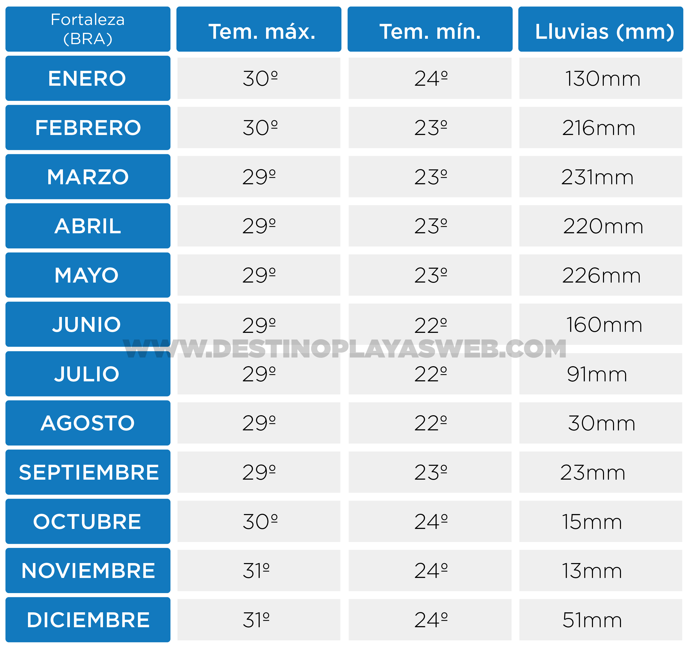

Mega guía: Playas de Brasil
En esta mega guía vas a conocer las mejores playas de Brasil, desde las más famosas hasta las más desconocidas. Además, vas a obtener datos precisos sobre el clima, las playas más lindas, cómo llegar y los lugares imperdibles de cada destino.
También vas a poder acceder a mapas de las playas de Brasil personalizados por cada región donde vas a ubicar fácilmente las términales, las paradas de buses, las atracciones, los puntos de partida de lo ferries y obviamente: Las mejores playas. ¡Qué la disfrutés!
Destino Playas es una marca registrada de Gonzalo Volpe Gómez. Se prohibe la copia y distribución de las imágenes de esta guía.
Índice
Río de Janeiro
San Pablo
Alagoas (Nordeste)
Pernambuco (Nordeste)
Ceará (Nordeste)
Bahía (Nordeste)
Río Grande del Norte (Nordeste)
Playas del Sur de Brasil
Playas de Río de Janeiro:
Si bien el estado de Río de Janeiro no es uno de los estados más grandes de Brasil cuenta con la particularidad de encontrarse en una posición privilegiada que le brinda muchísima belleza a sus playas. Literalmente tiene un sinfín de playas para todos los tipos y estilos de viaje.
Es válido destacar que la ciudad de Río de Janeiro es solo una parte del estado de Río de Janeiro, es similar a lo que sucede con Capital Federal y la provincia de Buenos Aires.
El aeropuerto internacional principal de Río de Janeiro es el Aeropuerto Internacional de Galeão.
Playas de Arraial do Cabo (Río de Janeiro):
En mi opinión, la mejor playa de Río de Janeiro y una de las mejores playas de Brasil, se encuentra en Arraial do Cabo y se llama Praia do Forno. La misma se encuentra entre un morro y para ingresar a ella podemos optar por tomar una lancha o realizar una trilha (caminata) de unos 10 minutos. Las playas de Arraial do Cabo se caracterizan por tener aguas extremadamentes cristalinas, tal es así, que se conoce este destino como el "Caribe Brasileño".
¿Cómo llegar a Arraial do Cabo? Podés tomar un bus desde Río de Janeiro a Arraial do Cabo que demora entre 3hs y 4hs o también podés optar por un transfer desde el aeropuerto. En la web de Rodoviária Novo Río podrán ver los precios y la dirección de la terminal. También se puede ir en bus desde Buzios, una ciudad vecina muy pintoresca de la cual les voy a hablar abajo. La empresa que opera el trayecto Buzios-Arraial do Cabo es Salineira
Mapa Río de Janeiro / Mapa Arraial do Cabo
En el siguiente mapa de las playas de Brasil vas a poder ver la ubicación de las principales playas de Arraial do Cabo.
El clima en Arraial do Cabo (Río de Janeiro) tiene temperaturas que oscilan entre los 18º y los 29º con precipitaciones que van desde los 33mm a los 104mm mensuales. Los meses con menos lluvia en Arraial do Cabo (Río de Janeiro) son junio, julio y agosto.

Clima Arraial do Cabo.
Texto completo Arraial do CaboPlayas de Buzios (Río de Janeiro):
Si estás buscando un destino playa de Brasil para ir en pareja, Buzios es una muy buena opción para vos. La principal característica de esta ciudad, perteneciente al estado de Río de Janeiro, es que mezcla playas hermosas con un abánico de posibilidades muy grande para pasear en familia o en pareja a la noche. En la avenida principal de Buzios, Rua das Pedras, vas a encontrar barcitos, restaurantes, paseos de compra y otros sitios muy pintorescos. Además, vas a poder deleitarte tomando unos tragos frente al mar en la zona de Porto da Barra.
Algunas de las mejores playas de Buzios son Praia Tartaruga y particularmente Azeda y Azedinha. Estas últimas son dos pequeñas playas hermosísimas ideal para ver el atardecer.
¿Cómo llegar a Buzios? Podés tomar un bus desde Río de Janeiro a Buzios que demora entre 2:50hs y 3:20hs u optar por un transfer desde el Aeropuerto Internacional de Galeão (Río de Janeiro). Podés chequear los precios en Rodoviária do Rio.
Mapa Río de Janerio / Mapa Buzios
En el siguiente mapa de las playas de Brasil vas a poder ver la ubicación de las principales playas de Buzios.
El clima en Buzios (Río de Janeiro) tiene temperaturas que oscilan entre los 18º y los 29º con precipitaciones que van desde los 36mm a los 102mm mensuales. El mes con menos lluvia en Buzios (Río de Janeiro) es agosto, seguido por febrero y junio.
Clima Buzios.
Texto completo BuziosPlayas de Ilha Grande (Río de Janeiro)
Si estás pensando en viajar con amigos o solo, seguramente Ilha Grande sea el destino ideal para vos. Imaginate un ambiente isleño, con muchas playas lindas y donde interactuar con personas de disintos lugares del mundo está al alcance de la mano. Si buscas conocer personas y hacer amigos es un lugar único. Mi recomendación es que se alojen en hostels.
Ilha Grande fue declarado partrimonio mundial según la UNESCO y algunas de las playas más lindas de este lugar y las islas aledañas son Praia Ponta da Piedade, Lopes Mendes (catalogada como una de las mejores playas del mundo, en mi opinión, de manera exagerada), Praia de Crena y Praia Dentista.
¿Cómo llegar a Ilha Grande? Lamentablemente no hay bus desde Río de Janeiro a Ilha Grande. Para llegar a este destino vas a tener que tomar un bus hasta Angra dos Reis y luego una embarcación que conecta Angra Dos Reis con Ilha Grande. El bus te va a dejar a unos muy pocos metros de donde salen las balsas. Podés ver los precios y horarios de los colectivos en la página oficial de la Rodoviária do Rio y la información de la travesía en barco en la web de Ilha Grande.
Mapa Río de Janerio / Mapa Ilha Grande
En el siguiente mapa de las playas de Brasil vas a poder conocer desde donde sale la embarcación de Angra dos Reis a Ilha Grande y la ubicación de las principales playas.
El clima en Río de Janeiro (Ilha Grande) tiene temperaturas que van desde los 16º hasta los 30º con precipitaciones que oscilan entre los 61mm y 268mm mensuales. Los meses con menos lluvia en Ilha Grande (Río de Janeiro) son junio, julio y agosto.
Clima Ilha Grande.
Texto completo Ilha GrandePlayas de Río de Janeiro (Ciudad)
Río de Janeiro es la ciudad playa por excelencia. Mucha danza, mucha playa y atracciones imponentes como el Cristo Redentor o el Pan de Azúcar. Entre las playas más conocidas se encuentran Ipanema, Copacabana y Leblon. Mi recomendación es que visiten la pequeña Praia Vermelha, ubicada a metros del Pan de Azúcar.
¿Qué hacer en Río de Janeiro? De todo. Tiene actividades para todos los gustos desde shoppings, bares y boliches con música hasta tours para meternos en el Brasil profundo. Las principales atracciones de Río de Janeiro son el Cristo Redentor, el Pan de Azúcar, el Barrio de Santa Teresa, la Escalera de Selarón y las playas de Copacabana e Ipanema.
Mis recomendaciones fuera del circuito conocido es ir a Lapa (Santa Teresa) de noche e ingresar a algún bar con samba brasileña. Van a quedar con la boca abierta después de ver como los locales pasan en segundos de estar comiendo, a pararse y mover los pies velozmente al ritmo de la música como solo ellos saben moverlos.
¿Cómo llegar a Río de Janeiro? ¡Es súper fácil! Río de Janeiro tiene el Aeropuerto Internacional Galeão.
Mapa Río de Janerio
En el siguiente mapa de las playas de Brasil vas a poder conocer los lugares destacados de Río de Janeiro, desde dónde está el aeropuerto, la terminal, las principales atracciones y las mejores playas.
La seguridad en Río de Janeiro no es un tema menor. ¿Es un lugar seguro o no? Como toda gran ciudad hay que saber cómo moverse y por dónde. En Río de Janeiro funciona a la perfección UBER y Cabify.
El clima en Río de Janeiro Ciudad tiene temperaturas que van desde los 18º a los 30º y con precipitaciones que oscilan entre 51mm y 170mm mensuales. Los meses con menos lluvia en Río de Janeiro son julio y agosto.
Clima Río de Janeiro Ciudad.
Texto completo Río de JaneiroPlayas de Paraty (Río de Janeiro)
Si hay algo que intento resaltar en todos mis escritos es la veracidad. Paraty (centro) no se caracteriza por tener lindas playas, pero podrás acceder, mediante tours en barcos y lanchas, a lugares muy bonitos como Praia Vermelha, Praia da Lula o Praia da Conceição.
Su principal atracción se debe a que es un lugar que practicamente se quedo en el tiempo. En Paraty, las calles son de piedra y la arquitectura colonial esta presente en casi cada esquina. Si vas en época de carnaval, vas a poder disfrutar del bloco da Lama, un grupo que sale a la calle disfrazado para bailar y disfrutar de las fechas festivas brasileñas. La particularidad de este grupo, que se creó en 1986, es que cierran el carnaval tomando baños de barro en la Praia Jabaquara.
Es un destino muy apto para parejas.
Otra opción interesante para visitar desde Paraty es Trindade, una pueblito vecino que se carateriza por ser un lugar donde suelen vacacionar los brasileños. Si te querés sentir brasileño por un día, Trindade es tu lugar y podés llegar tomándote el BUS de la empresa COLITUR en la terminal de Paraty.
¿Cómo llegar a Paraty? Podés tomar un bus desde Río de Janeiro a Paraty que demora alrededor de 4:30hs. Los horarios y precios los podes chequear en la web oficial de la Rodoviária do Rio.
Mapa Río de Janeiro / Mapa Paraty
En el siguiente mapa de las playas de Brasil vas a poder conocer los principales lugares de Paraty (Río de Janeiro), desde la terminal y el puerto hasta las mejores playas.
El clima en Paraty (Río de Janeiro) tiene temperaturas que oscilan entre los 16º y los 30º con precipitaciones que van desde los 76mm a los 271mm mensuales. Los meses con menos lluvia en Paraty (Río de Janeiro) son junio, julio y agosto.
Clima Paraty.
Texto completo ParatyPlayas de San Pablo:
¿Hay playas en San Pablo (Brasil)? Es una de las preguntas que más me hacen los viajeros que quieren conocer nuevos destinos playa de Brasil. La respuesta es sí. Si bien San Pablo ciudad no tiene playas, el Estado de San Pablo sí, y muchas de ellas extremadamente lindas. El aeropuerto principal de la ciudad de San Pablo es el Aeropuerto Internacional de São Paulo-Guarulhos.
Playas de Ilhabela (San Pablo):
Ilhabela es posiblemente uno de los mejores lugares para vacacionar en San Pablo y no solo por la belleza de su costa sino por la cantidad de playas que tiene y por poseer un buen ambiente para pasear, salir a comer y disfrutar de la noche. Si amas andar en bicicleta y te apasiona el mar, Ilhabela es una muy buena opción ya que tiene una ciclovía costera muy linda que te permitirá recorrer algunas de sus playas pedaleando.
En mi opinión, la playa más linda de la isla y la que es imperdible, se llama Praia de Castelhanos la cual tiene la particularidad de tener forma de corazón. Sí, románticos, una playa en forma de corazón.
TIP: Si quieren sacarse una buena foto con el fondo de la playa en forma de corazón o simplemente admirar la belleza impactante de este sitio, pueden subir al mirador ubicado en el extremo derecho (mirando al mar) de la playa. Además, Praia de Castelhanos se caracteriza por tener un agua sumamente cristalina.
Otras playas interesantes son la Praia da Vila ubicada en el centro histórico, la Praia Viana donde se encuentra uno de los restaurantes más sofisticados de la isla, Praia Grande, Praia do Veloso y Praia do Perequê.
En primer lugar vas a tener que llegar al Aeropuerto Internacional de São Paulo-Guarulhos y luego tomar un bus desde San Pablo hasta San Sebastián (São Sebastião). Lamentablemente no hay bus desde San Pablo a Ilhabela ya que esta última es una isla. En la página oficial de la Rodoviária do Tietê podés ver los horarios y los precios del trayecto que une San Pablo con San Sebastián. Una vez en San Sebastián podrás tomar un Ferry gratuito (sí, es gratis) para llegar a Ilhabela en unos 30 minutos. Los horarios del ferry gratuito entre San Sebastián e Ilhabela los podés ver en la página del Gobierno de San Pablo.
Mapa San Pablo / Mapa Ilhabela
En el siguiente mapa de las playas de Brasil vas a poder conocer los principales lugares de Ilhabela (San Pablo), desde dónde sale el ferry que une la isla con San Sebastián hasta las mejores playas.
El clima en Ilhabela (San Pablo) tiene temperaturas que oscilan entre los 13º y los 28º con precipitaciones que van desde los 71mm a los 240mm mensuales. El mes con menos lluvia en Ilhabela (San Pablo) es agosto.
Clima Ilhabela.
Texto completo IlhabelaPlayas de Ilha das Couves, San Sebastián (San Pablo):
Posiblemente una de las playas más remotas y desconocidas de todo Brasil se encuentra en San Pablo. Si estás buscando desconectar de todo y conectar con la naturaleza es tu lugar. A Ilhas das Couves se puede llegar solamente en barco y tiene la particularidad de ser una isla muy pequeña donde solo se pueden hospedar 13 personas a la vez. No se confundan este destino con la famosa playa Ilha das Couves en Ubatuba, esta Ilha das Couves ni siquiera aparece en Google.
En la isla se puede acampar o pagar una habitación en el único hospedaje de Ilha das Couves. Las principales actividades son disfrutar de la única playa, que va a estar disponible casi para ustedes solos, y de las caminatas internas por la isla. Además, se pueden organizar excursiones a playas desiertas, como por ejemplo las islas vecinas conocidas como "As Ilhas". Otra recomendación es combinar este destino con Maresias, el paraíso para los amantes del surf, donde van a poder ver playas muy extensas y con olas gigantes.
Para llegar es necesario realizar una travesía en barco que sale desde Barra do Sahy. A Barra do Sahy se puede llegar en bus desde San Pablo, podés ver los horarios y precios en la web oficial de Rodoviária do Tietê
Mapa San Pablo / Mapa Ilha das Couves
En el siguiente mapa de las playas de Brasil vas a poder conocer los principales lugares de Ilha das Couves (San Pablo), desde dónde sale la embarcación que une Barra do Sahy con la isla y las mejores playas de los alrededores.
El clima en Ilha das Couves (San Pablo) tiene temperaturas que oscilan entre los 18º y los 31º con precipitaciones que van desde los 22mm a los 107mm mensuales. El mes con menos lluvia en Ilha das Couves (San Pablo) es agosto.
Clima Ilha Das Couves.
Texto completo Ilha Das CouvesPlayas de Ubatuba (San Pablo):
Entre sierra y mar, Ubatuba tiene un ambiente increíble para disfrutar de las vacaciones en San Pablo. Se ubica en el litoral norte y tiene más de 100 playas. Sí, playero, vas a tener que visitar este destino varias veces.
Una de mis recomendaciones es que realicen la caminata de las 7 playas, donde pasarán por playas muy distintas entre sí como Cedro do Sul, Prahinha da Deserta, Deserta y Grande do Bonete. En el mapa de Ubatuba (se encuentra abajo), van a poder acceder a la ruta detallada de esta travesía que se puede iniciar desde la Fortaleza o desde la Lagoinha.
Además de la caminata de las 7 playas, podrás conocer destinos más exóticos como lo son la Ilha do Prumirim y la Ilha das Couves (no confundir con la Ilha das Couves de San Sebastián), en esta no es posible hospedarse.
Ilha das Couves es un verdadero paraíso de aguas cristalinas donde podrás pasar todo el día relajado. Mi recomendación es visitarla en días de semanas y llegar en la mañana para evitar a la masa de turistas que aumenta los sábados, domingos y feriados. Podés acceder a Ilha das Couves mediante barcos provenientes de varias playas de Ubatuba, pero principalmente, de la Praia de Picinguaba.
Por su parte, Ilha do Prumirim no se queda atrás y posee aguas cristalinas y un ambiente natural fabuloso. Es un poco menos concurrida que Ilha das Couves y fue escenario de la película "Lagoa Azul".
Por último, es válido destacar la pequeña Praia do Portugues, considerada por muchos locales como la más linda de Ubatuba por sus aguas cristalinas. Para llegar, es necesario caminar entre las rocas o con el agua al pecho desde Praia do Felix.
Playero y playera, Ubatuba es una de las capitales del surf de Brasil. Si te gusta este deporte, vas a encontrar muchas playas para disfrutar. Una recomendación es que vayas a Itamambuca, podés conocer más sobre este destino en el blog de MalevaMag
¿Cómo llegar a Ubatuba? Se puede llegar en bus desde San Pablo a Ubatuba y podés ver los horarios y precios en www.clickbus.com.br/
Mapa San Pablo / Mapa Ubatuba
En el siguiente mapa de las playas de Brasil vas a poder conocer los principales lugares de Ubatuba, la ruta de la caminata de las 7 playas y cómo llegar a Ilha das Couves e Ilha do Prumirim.
El clima en Ubatuba (San Pablo) tiene temperaturas que oscilan entre los 17º y los 29º con precipitaciones que van desde los 63mm a los 170mm mensuales. El mes con menos lluvia en Ubatuba (San Pablo) es agosto.
Clima Ubatuba.
Texto completo UbatubaPlayas de Brasil Nordeste:
Si estás buscando destinos de playas en el Nordeste de Brasil llegaste al lugar indicado. El nordeste brasileño es una de las zonas más anheladas por los viajeros de todo el mundo ya que cuenta con playas increíbles para todos los gustos. Los principales estados del nordeste con excelentes playas son Ceará, Alagoas, Río Grande del Norte, Pernambuco y Bahía.
Playas de Alagoas (Nordeste de Brasil):
En el estado de Alagoas, al nordeste de Brasil, hay un sinfin de playas hermosísimas que van desde pueblos súper famosos como Maragogi (Brasil) y Maceió (Brasil) hasta playas desconocidas como São Miguel dos Milagres (Brasil), Barra de Santo Antônio (Brasil) y Marechal Deodoro (Brasil).
El clima en Alagoas es similar para Maceió, Maragogi y el resto de las playas aledañas. Las temperaturas oscilan entre los 20° y los 30° y las precipitaciones van desde los 51mm hasta los 236mm mensuales. Los meses con menos lluvia en Alagoas son noviembre y diciembre.
Clima Alagoas.
Playas de Maragogi (Alagoas):
Maragogi es sin lugar a dudas uno de los destinos playa del nordeste más atractivo para todos los viajeros. Se caracteriza por tener un agua sumamente cristalina y estar en la Costa dos Corais, una zona de protección ambiental de Brasil. Otra característica de este destino es que cuando baja la marea se forman bancos de arena donde es posible caminar varios metros con sentido al mar sin dejar de hacer pie y aprovechar las piscinas naturales que se forman como Taocas e Barra Grande. Una alternativa para conocer estas piscinas es contratar una excursión en barco.
La playa más famosa y con más infraestructura es la Praia de Maragogi, sin embargo, las mejores playas se encuentran un poco más alejado del centro. Por ejemplo, la Praia de Peroba, al limite del estado de Alagoas y Pernambuco, cuenta con muchos cocoteros, aguas cristalinas y algunas piscinas naturales dependiendo de la marea. También te recomiendo, si buscás tranquilidad, visitar los días de semana la Praia Xaréu. Otras de las playas famosas son Antunes, Ponta de Mangue y Barra Grande.
¿Cómo llegar a Maragogi (Brasil)? Hay dos aeropuertos cerca que reciben turistas de todas partes del mundo. El Aeroporto Zumbi dos Palmares (Maceió) y el Aeroporto Internacional dos Guararapes (Recife). Desde cualquiera de estos aeropuertos es recomendable alquilar un auto ya que no suele haber muchas líneas que lleguen a este destino. Sin embargo, hay una empresa que realiza el trayecto saliendo desde las terminales de Refice y Maceió llamada Real Alagoas.
El clima en Alagoas es similar para Maceió, Maragogi y el resto de las playas aledañas. Las temperaturas oscilan entre los 20° y los 30° y las precipitaciones van desde los 51mm hasta los 236mm mensuales. Los meses con menos lluvia en Alagoas son noviembre y diciembre.
Playas de Maceió (Alagoas):
Playas con un mar cristalino y colores tan intensos que no tienen nada que envidiarle al Caribe. Maceió es el destino más famoso del estado de Alagoas y su capital. Se caracteriza por ser una ciudad con movimiento tanto de día como de noche.
Las tres principales playas de Maceió son: Pajuçar, la cual posee unas hermosas piscinas naturales donde te podrás relajar con peces y aguas con pocas olas, Ponta Verde, una playa con cocoteros, sombra y mar calmo y Jatiúca una playa con olas más fuertes pero que mantiene el color intenso del mar. En todas estas playas vas a encontrar restaurantes, reposeras y lugares donde tomarte una rica caipirinha.
Una de las características más interesantes de Maceió es que es un destino estratégico para hacer base y realizar excursiones a otros paraísos cercanos, como por ejemplo Maragogi, São Miguel dos Milagres y hasta Porto Galhinas en el estado vecino de Pernambuco.
¿Cómo llegar a Maceió (Alagoas)? Es súper fácil, Maceió cuenta con un aeropuerto llamado Aeroporto Zumbi dos Palmares.
El clima en Alagoas es similar para Maceió, Maragogi y el resto de las playas aledañas. Las temperaturas oscilan entre los 20° y los 30° y las precipitaciones van desde los 51mm hasta los 236mm mensuales. Los meses con menos lluvia en Alagoas son noviembre y diciembre.
Playas de São Miguel dos Milagres, Barra de Santo Antônio y Marechal Deodoro (Alagoas):
São Miguel dos Milagres, Barra de Santo Antônio (Brasil) y Marechal Deodoro (Brasil) son tres destinos que se encuentran fuera de los circuitos convencionales del nordeste y poseen algunas de las playas más lindas de Alagoas.
La Praia do Francês se encuentra en Marechal Deodoro (Brasil) y es catalogada, por algunos expertos de playas de Brasil, como una de las más lindas de Alagoas y a su vez, mucho menos conocidas que las famosas playas de Maceió y Maragogi. Esta a 25 km de Maceió y esta cercada por una barrera de coral que hace que el mar sea muy calmo. Se recomienda visitar esta playa los días de semana y en el período de marea baja para poder aprovecharla bien.
En Barra de Santo Antônio vas a encontrar la gran Praia do Carro Quebrado la cual se caracteriza por ser muy larga y tener muy pocas visitas en la semana. El nombre se debe a que es una playa de difícil acceso para autos. Se recomienda llegar a ella en buggy.
En São Miguel dos Milagres podrás disfrutar de la Praia do Toque, un lugar donde se forman con frecuencia lagunas de aguas cristalinas y que posee varios cocoteros que embellecen el paisaje. A 10km de este sitio encontrarás la Praia do Patacho, una zona casi desierta para los amantes de la tranquilidad.
Se pueden llegar a todos estos destinos realizando excursiones que salen desde Maceió.
El clima en Alagoas es similar para Maceió, Maragogi y el resto de las playas aledañas. Las temperaturas oscilan entre los 20° y los 30° y las precipitaciones van desde los 51mm hasta los 236mm mensuales. Los meses con menos lluvia en Alagoas son noviembre y diciembre.
Mapa playas del nordeste de Brasil / Mapa Alagoas / Mapa Maceió y Maragogi
Playas de Pernambuco (Nordeste de Brasil):
Muchas de las fotos paradisíacas con las que se conoce el nordeste de Brasil pertencen a Pernambuco. Entre los destinos playas más atractivos se encuentran Porto de Galhinas, Fernando do Noronha y Recife.
Playas de Porto de Galhinas (Pernambuco):
Las playas de Porto Galhinas son algunas de las más buscadas por los turistas provenientes de diversas partes del mundo. ¿Viste la famosa foto de unas lanchas en un mar totalmente cristalino? Bueno, es acá. Posiblemente la característica más destacada de este paraíso playero son sus aguas cristalinas y las piscinas naturales llenas de pececitos.
La playa principal de Porto de Galhinas es conocida como Praia da Vila (o Porto de Galhinas) y es una de las más lindas del estado de Pernambuco. Además, desde este punto salen las excursiones que van hasta las piscinas naturales. Otras de las playas destacadas son las de Muro Alto, un lugar que posee varios resorts y es ideal para familias con pequeños, Praia do Cupe y Praia de Maracaípe, ideal para los surfistas y los que disfruten olas fuertes, y para los que prefieren el mar calmo, mi recomendación es: Pontal do Cupe y Pontal do Maracaípe (una playa donde se mezclan aguas de mar y río generando un escenario único). En las cercanías de Porto de Galhinas podreás encontrar también playas muy hermosas como la famosa Praia dos Carneiros (Tamandare) donde se ubica la Capela de São Benedito o Igrejinha dos Carneiros.
¿Cómo llegar a Porto de Galhinas (Brasil)? Es preciso, en primer lugar, llegar al Aeroporto Internacional do Recife y luego tomar un bus hasta Porto de Galhinas. El bus pasa enfrente del aeropuerto, lo que hace que sea una opción verdaderamente sencilla, cómoda y muy barata. La empresa que opera este trayecto es Viação Cruzeiro y Viação Vera Cruz. En el caso de Viação Vera Cruz la línea que pasa por el aeropuerto es la 195 y suele parar a la altura de la salida A4. Podés obtener más información en la página web de Grande Refice. También es posible ir en taxis o en transfers.
Mapa playas del nordeste de Brasil / Mapa Porto de Galhinas y Recife
En el siguiente mapa de las playas de Brasil vas a poder conocer los principales lugares de Porto de Galhinas y Recife, desde donde se ubica el aeropuerto hasta las mejores playas.
El clima en Porto de Galhinas posee temperaturas que van desde los 21º a los 31º y precipitaciones mensuales desde los 59mm a los 199mm. Lá época con menos lluvia en Porto de Galhinas va desde octubre a diciembre.
Clima Porto de Galhinas.
Playas de Fernando do Noronha (Pernambuco):
La segunda mejor playa del mundo según Tripadvisor se encuentra en Brasil y más precisamente en la Baía do Sancho perteneciente al archipiélago de Fernando de Noronha en Pernambuco. Aguas sumamente cristalinas, mucha vida marina y toda la buena onda de los pernambucanos en una región que abarca 21 islas e islotes.
Una de las principales características de Fernando de Noronha es que es un destino ideal para los amantes del buceo y del snorkel, vas a poder ver varios tipos de peces, tortugas y hasta pequeños e indefensos tiburones.
La isla se divide en dos zonas, Mar de adentro y Mar de afuera. En el Mar de adentro se encuentra la Praia do Sancho, la Baía dos Porcos y la Cacimba do Padre (ideal para surfear). Praia do Sancho es la playa más famosa, y posiblemente, la más linda de Brasil. A ella se puede acceder por mar o bajando una escalera incrustada en el medio de una piedra.
En el Mar de afuera se encuentrar las playas Sueste (muy óptima para bucear y hacer snorkel) y la Praia do Leão (donde se ven tortugas con facilidad). En la zona del centrito de Noronha, cerca de la Vila dos Remédios, se encuentran 3 playas que tienen un poquito más de infraestrucutra. Ellas son la Praia do Cachorro (posee un barcito), Praia do Meio y la Praia da Conceição.
Otras playas que recomiendo para los que les gusta hacer snorkel y bucear son Praia do Porto y Atalaia.
¿Cómo llegar a Fernando do Noronha (Brasil)? Si bien Fernando de Noronha tiene aeropuerto, el mismo no es internacional. Por lo tanto, si viajás desde Argentina o desde algún otro país que no sea Brasil, tendrás que llegar primero al Aeropuerto Internacional de Recife o al Aeroporto de Natal y luego, conectar un vuelo hacia Fernando do Noronha.
Mapa playas del nordeste de Brasil / Mapa de Fernando de Noronha
En el siguiente mapa vas a poder conocer las mejores playas de Fernando de Noronha (Brasil).
El clima en Fernando do Noronha tiene temperaturas que van desde los 23º a los 30º y precipitaciones mensuales desde los 13mm a los 226mm. Lá época con menos lluvia en Fernando de Noronha son los meses de octubre y noviembre.

Clima de Fernando do Noronha.
Playas de Recife (Pernambuco):
Recife es la capital del estado de Pernambuco y también es conocida como la ciudad de los arrecifes. Con una influencia holandesa muy fuerte y detalles arquitectónicos del período colonial, Recife se convirtió en una de las ciudades más evolucionadas de Brasil.
Las dos playas principales son Boa Viagem y Praia do Pina. La primera, se caracteriza por ser la más famosa y poseer una estructura que permite pasar el día debajo de una sombrilla o comiendo algo en los restaurantes de la zona. La segunda, suele ser un destino donde van más locales.
¿Hay tiburones en Recife? Lamentablemente, por la calidez de sus aguas y por la cantidad de arrecifes de este destino, es posible encontrarse con tiburones. Se aconseja no bañarse en donde haya carteles públicos que indiquen la posible presencia de tiburones.
¿Cómo llegar a Recife (Brasil)? ¡Es súper fácil! Recife posee un aeropuerto internacional llamado Aeroporto Internacional do Recife.
Mapa playas del nordeste de Brasil / Mapa de Recife y Porto de Galhinas
En el siguiente mapa de las playas de Brasil vas a poder conocer los principales lugares de Porto de Galhinas y Recife, desde donde se ubica el aeropuerto hasta las mejores playas.
El clima en Recife tiene temperaturas que van desde los 21º a los 30º y precipitaciones mensuales desde los 48mm a los 213mm. Lá época con menos lluvia en Recife va desde octubre a diciembre.
Clima de Recife.
Playas de Ceará (Nordeste de Brasil):
Playas de Fortaleza (Ceará) y playas de Jericoacoara (Ceará):
Fortaleza es la capital del estado de Ceará y se destaca por ser un destino que tiene actividades tanto para el día como para la noche. En las playas de Fortaleza vas a poder pasar un dia en las mega carpas de la Praia do Futuro, hacer paseos en barco y caminar mirando el mar en la Av. Beira Mar. En la noche vas a poder conocer la Feiriniha de Artesanato y comer en alguno de los restaurantes locales de la zona.
La playa principal de este destino es la Praia do Futuro que cuenta con grandes carpas modernas que son furor en Brasil y tienen wifi, restaurantes y hasta piscina. Otras de las playas famosas son Iracema y Mucuripe. Esta última ubicada en la región del Club Náutico.
Sin embargo, el plato fuerte es Jericoacora que queda a 300km de Fortaleza y se encuentra en un estado mucho más natural. Allá solo hay calles de arena sin iluminación y un ambiente donde reina la simplicidad. Si querés relajarte, Jericoacora es una muy buena opción donde vas a disfrutar de algunas lugares como Praia de Jeri (la que tiene mejor infraestructura), Praia da Malhada (casi desierta) y algunas lagunas perdidas entre dunas, como la Lagoa da Tatajuba y la Lagoa do Paraíso.
¿¿Cómo llegar a Fortaleza y a Jericoacoara? Es muy fácil, la ciudad posee un aeriopuerto internacional denominado Aeroporto Internacional Pinto Martins. Si bien Jericoacoara tiene un aeropuerto, no cuenta con mucha cantidad de vuelos y los disponibles suelen ser caros. Por lo tanto, para llegar a Jericoacoara te recomiendo tomar un bus desde Fortaleza que demora entre 7hs y 8hs. Pueden ver los precios y horarios en la empresa Fretcar.
Mapa playas del nordeste de Brasil / Mapa Fortaleza y Jericoacoara
En el siguiente mapa de las playas de Brasil vas a poder conocer los principales lugares de Fortaleza y Jericoacoara, desde las terminales de buses y los sitios turísticos hasta las mejores playas y lagunas.
El clima en Fortaleza (Brasil) tiene temperaturas que oscilan entre los 22º y los 31º con precipitaciones que van desde los 13mm a los 231mm mensuales. Los meses con menos lluvia en Fortaleza (Ceará) son septiembre, octubre y noviembre.
Clima de Fortaleza.
El clima en Jericoacoara (Brasil) es similar al de Fortaleza, con temperaturas que van desde los 22º a los 32º y precipitaciones mensuales desde los 15mm a los 219mm. Los meses con menos lluvia en Jericoacoara (Ceará) son también septiembre, octubre y noviembre.
Clima de Jericoacoara.
Playas de Bahía (Nordeste de Brasil):
Bahía es el estado más al sur del nordeste de Brasil y como toda la región, posee playas espectaculares. El diferencial es la gran potencia cultural e histórica de este lugar mezclado con la calidez y buena onda de los baianos. Entre los mejores destinos playas de Bahía se encuentran Salvador de Bahía y Morro de San Pablo, además, si buscan salir del circuito turístico tradicional, se podrán deleitar con las playas de la Península de Maraú.
Playas de Salvador de Bahía (Bahía):
¡La Bahía es sol y día! Literalmente Salvador de Bahía es un museo viviente de la historia y cultura de Brasil. Además, según expertos, posee los mejores y más divertidos carnavales de todo Brasil, debido a la simpatía de los baianos. Así que si visitás este paraíso playero preparate para sumergirte en buena música, comidas y bailes como por ejemplo el Axé, reggae, forró, calipso y capoeira.
Las mejores playas de Salvador de Bahía son las más alejadas del centro, como por ejemplo Stella Maris y Flamengo, dos playas extensas con aguas cálidas color verde esmeralda y cocoteros. Dependiendo de la marea, el mar de esta zona alterna entre olas fuertes y momentos más calmos en donde se forman piscinas naturales.
Las playas más cercanas a la urbe son Praia do Farol da Barra y Buracão. Si quieren disfrutar de reposeras y sombrillas, mi recomendación es que vayan a la playa de la ciudad vecina conocida como Ipitanga (Lauro de Freitas).
¿Cómo llegar a Salvador de Bahía (Brasil)? ¡Es súper fácil! Salvador de Bahía posee aeropuerto internacional denominado Aeropuerto Internacional Diputado Luís Eduardo Magalhães.
Mapa playas de Bahía / Mapa playas de Salvador de Bahía / Mapa playas Morro de San Pablo
En el siguiente mapa de las playas de Brasil vas a poder conocer los principales lugares de Salvador de Bahía, Morro de San Pablo, la Península de Maraú y del estado de Bahía.
El clima en Salvador de Bahía posee temperaturas que van desde los 21º a los 30º y precipitaciones mensuales desde los 112mm a los 251mm. Lá época de menos lluvia en Salvador de Bahía va desde septiembre hasta febrero.
Clima Salvador de Bahía.
Playas de Salvador de Bahía (Bahía):
Son infinitas la cantidad de veces que me preguntaron si el Morro de San Pablo queda en el estado de San Pablo. La respuesta es: NO. El Morro de San Pablo queda en el estado de Bahía, al nordeste de Brasil, y se caracteriza por ser un destino muy famoso pero que aún mantiene un ambiente rústico. En el Morro de San Pablo solo se albergan 6.000 habitantes que viven del turismo. Es ideal para jóvenes que buscan descansar en lindas playas por el día y fiesta en la noche.
El plato fuerte de este destino son las hermosas playas de aguas cristalinas que tienen nombres bien simples. La Primeira Praia y la Segunda Praia son ideales para pasar el día y hacer deportes. Suelen tener bastante concurrencia. La Terceira Praia es una mezcla entre tranquilidad y movimiento, es donde se ubican muchas de las posadas y desde donde salen los paseos. Si están buscando un poco más de tranquilidad, aunque todo depende de la cantidad de turistas que haya en el destino, quizás tus playas predilectas sean la Quarta Praia y la Quinta Praia.
En cuanto a la vida nocturna se destacan la Fiesta de la Espuma en Pulsar Disco y las festas de Toca do Morcego. Las fiestas comienzan a partir de las 23hs aproximadamente.
¿Cómo llegar al Morro de San Pablo (Brasil)? Es posible llegar a este destino en 20 minutos mediante taxis aéreos desde Salvador de Bahía. Dos de las empresas que operan esta ruta son Aerostar y Addey. También es posible llegar por mar con lanchas que salen desde la Terminal Marítimo Turístico en Salvador y demoran alrededor de 2hs. Por último, si no te importa el tiempo de demora y querés llegar al Morro de San Pablo gastando lo menos posible, podés ir desde Salvador a Itaparica en un ferry que sale desde la terminal São Joaquim (Salvador de Bahía) y llega a la terminal Bom Despacho (Itaparica). Una vez ahí tendrás que dirigirte hacia Valença ya sea en una van, en taxi o en bus. En Valença encontrarás una pequeña terminal marítima desde donde salen lanchas hacia el Morro de San Pablo.
Mapa playas de Bahía / Mapa playas de Salvador de Bahía / Mapa playas Morro de San Pablo
En el siguiente mapa de las playas de Brasil vas a poder conocer los principales lugares de Salvador de Bahía, Morro de San Pablo, la Península de Maraú y del estado de Bahía.
El clima en el Morro de San Pablo (Bahía) posee temperaturas que van desde los 20º a los 30º y precipitaciones mensuales desde los 109mm a los 251mm. Lá época de menos lluvia en el Morro de San Pablo va desde septiembre hasta febrero.
Clima Morro de San Pablo (Bahía)
Playas de la Península de Maraú:
La Península de Maraú perteneciente al estado de Bahía es uno de los lugares menos conocidos por los turistas. Si estás buscando tranquilidad y relajarte en una playa increíble del nordeste brasileño este es tu destino.
¿Cómo llegar a la Península de Maraú (Brasil)? Una de las particularidades por la que este destino es uno de los más lindos del nordeste pero menos frecuentado, es debido a que el acceso es algo difícil. Se ubica a 270km de Salvador de Bahía y el trayecto para ir en auto tiene muchas calles solo de arena. La opción más recomendadas para evitar conducir en este trayecto es ingresar en Barco vía ciudad de Camamu (a 195 km de Salvador de Bahía). Para llegar a Camamu desde Salvador de Bahía se recomienda tomar un ferry hasta la isla Itaparica (Teminarl Bom Despacho) y de ahí tomar un bus hasta Camamu. Una vez en Camamu podrán tomar una lancha hasta la Península de Maraú y empezar a disfrutar sus vacaciones. Las dos empresas que operan las lanchas son la Princesinha Turismo y la Camamu Adventure. ¿Vale la pena? Playas increíbles y con poco turismo. ¡Claro que sí! En el mapa de abajo te explico detalladamente la ruta para llegar a este paraíso.
Mapa playas de Bahía / Mapa playas de Península de Maraú / Mapa playas de Salvador de Bahía / Mapa playas Morro de San Pablo
En el siguiente mapa de las playas de Brasil vas a poder conocer los principales lugares de Salvador de Bahía, Morro de San Pablo, la Península de Maraú y del estado de Bahía.
El clima en la Península de Maraú es similar al clima del Morro de San Pablo (Bahía) ya que posee temperaturas que van desde los 20º a los 30º y precipitaciones mensuales desde los 109mm a los 251mm. Lá época de menos lluvia va desde septiembre hasta febrero.
Playas de Río Grande del Norte (Brasil) (Nordeste de Brasil):
Posiblemente Río Grande del Norte no te suene familiar, pero con seguridad que si te digo Natal y Pipa vas a pensar en playa y en irte de vacaciones a Brasil. Natal y Pipa son los destinos más famosos de Río Grande del Norte, pero también podés visitar playas de ensueño en Tabatinga y Maracajaú.
Playas de Natal (Río Grande del Norte):
Natal es la capital del estado de Río Grande del Norte y es considerada la ciudad con más días de sol de todo Brasil con alrededor de 300 días de sol al año. Algunas de las principales características del paisaje de Natal son las dunas, el mar, los ríos y las áreas verdes.
Posiblemente la playa más famosa de Natal es Ponta Negra, ahí encontrarás una buena infraestructura con quioscos, restaurantes y todo lo necesario para pasar el día. Si estás buscando un poco más de tranquilidad te recomiendo Praia do Cotovelo.
A su vez, las playas del centro no son recomendadas a los turistas debido a que poseen muchas piedras. Ellas son: Praia dos Artistas, Praia do Meio y Praia Areia Preta.
Otros destinos que podés conocer realizando excursiones desde Natal son Tabatinga, Pipa y si te gusta el contacto con la vida marina, los Parrachos de Maracajaú, un lugar donde es posible realizar snorkel y hacer el bautismo de buceo.
Además de disfrutar de las playas, a los más aventureros les recomiendo hacer un paseo por las dunas en Buggy.
¿Cómo llegar a Natal (Brasil)? ¡Es súper fácil! Natal tiene un aeropuerto internacional llamado Aeropuerto Internacional de Grande Natal.
Mapa playas de Bahía / Mapa playas de Natal/ Mapa playas de Pipa / Mapa playas de Tabatinga y Maracajaú
En el siguiente mapa de las playas de Brasil vas a poder conocer los principales lugares de Natal, Pipa y del estado de Río Grande del Norte.
El clima en Natal (Brasil) tiene temperaturas que van desde los 20º a los 31º y precipitaciones mensuales desde los 18mm a los 206mm. La época con menos lluvia en Natal corresponde a los meses de octubre y noviembre.
Clima en Natal
Playas de Pipa (Río Grande del Norte):
Pipa se ubica a 80km de Natal y es un destino ideal para los amantes de la naturaleza y las buenas playas. En los últimos años Pipa se convirtió en uno de los destinos playa de Brasil más buscados por los turistas. Es así, que tiene opciones y actividades para todos los estilos de viajeros.
En Pipa vas a poder caminar por la Av. Baía dos Golfinhos y deleitarte con la comida local de los restaurantes, también podrás visitar el Santuario Ecológico y claro, vas a poder disfrutar de muy buenas playas.
La playa central de Pipa es la que posee mejor estructura y a su vez, la más concurrida. Si preferís disfrutar de un tiempo relajado te recomiendo Baía dos Golfinhos, un destino al que solo se accede por las playas laterales cuando hay marea baja y donde se avistan delfines con mucha facilidad y Madeiro, un lugar donde conviven la vegetación y el mar haciendo un ambiente único.
¿Cómo llegar a Pipa (Brasil)? ¿Cómo llegar a Pipa (Brasil)? En primer lugar tendrás que llegar al Aeropuerto Internacional de Natal y luego, podrás tomar un bus desde Natal a Pipa saliendo desde la Rodoviária de Natal. Podés consultar los horarios de los buses AQUÍ.
Mapa playas de Bahía / Mapa playas de Natal/ Mapa playas de Pipa / Mapa playas de Tabatinga y Maracajaú
En el siguiente mapa de las playas de Brasil vas a poder conocer los principales lugares de Natal, Pipa y del estado de Río Grande del Norte.
El clima en Pipa (Brasil) tiene temperaturas que van desde los 20º a los 32º y precipitaciones mensuales desde los 18mm a los 198mm. La época con menos lluvia en Pipa corresponde a los meses de octubre y noviembre.
Clima en Pipa
Playas de Maracajaú (Río Grande del Norte):
También conocida como el Caribe de Río Grande del Norte es un destino ideal para los amantes del snorkel ya que se pueden divisar muchos peces y diversos animales marinos. Además, es posible disfrutar de las dunas y de un ambiente natural mucho más preservado que en otros destinos de Río Grande del Norte.
Se puede conocer este paraíso con excursiones de día completo que salen desde Natal.
Mapa playas de Bahía / Mapa playas de Natal/ Mapa playas de Pipa / Mapa playas de Tabatinga y Maracajaú
En el siguiente mapa de las playas de Brasil vas a poder conocer los principales lugares de Natal, Pipa y del estado de Río Grande del Norte.
El clima en Maracajaú (Brasil) es similar al de Natal y Pipa, con temperaturas que van desde los 20º a los 32º y precipitaciones mensuales desde los 18mm a los 198mm. La época con menos lluvia corresponde a los meses de octubre y noviembre.
Playas de Tabatinga (Río Grande del Norte):
A 45km del Aeropuerto Internacional de Grande Natal se encuentra Tabatinga, un destino playa bastante más desconocido que Natal y Pipa.
Las playa de Tabatinga esta divida en dos partes, la parte Alta posee mar agitado y es ideal para los que practican deportes, en cambio, la parte Baja tiene aguas cristalinas y calmas y es apta para visitarla con niños. Otra de las atracciones de este destino es que posible divisar delfines en sus aguas.
Se puede conocer este destino con excursiones de día completo que salen desde Natal.
Mapa playas de Bahía / Mapa playas de Natal/ Mapa playas de Pipa / Mapa playas de Tabatinga y Maracajaú
En el siguiente mapa de las playas de Brasil vas a poder conocer los principales lugares de Natal, Pipa y del estado de Río Grande del Norte.
El clima en Tabatinga (Brasil) es similar al de Natal y Pipa, con temperaturas que van desde los 20º a los 32º y precipitaciones mensuales desde los 18mm a los 198mm. La época con menos lluvia corresponde a los meses de octubre y noviembre.
Playas del Sur de Brasil:
El bum turístico de la década del 90 eran argentinos en las playas del sur de Brasil. ¿Les suena Floriánopolis, Bombinhas y Camboriú? Los 90 ya quedaron muy atrás pero la cercanía entre Argentina y estos destinos, hace que miles de playeros las sigamos eligiendo para vacacionar.
Playas de Florianópolis (sur de Brasil):
Con algo más de 42 playas, Floriánopolis es un destino para todo tipo de viajero, desde familias, hasta parejas y amigos.
En el norte de la isla podrás encontrar una de las playas más famosas, Jurerê, que tiene una parte llamada Jurerê Tradicional y otra, Jurerê Internacional. Cerca de Jurerê se encuentran algunas costas con aguas tranquilas ideales para ir con pequeños, como por ejemplo: Praia do Forte, Daniela, Canasvieiras y Lagoinha do Norte. Si preferís un lugar con olas más fuertes, tu playa predilecta va a ser "Praia Brava". También podrás visitar la desértica Praia do Moçambique luego de hacer una caminata que comienza en Praia do Santinho.
El este de Floriánopolis es más buscado por jóvenes y por amantes del surf. Algunas de las playas recomendadas de esta región son Praia Mole y Joaquina, que se encuentran cercadas por dunas y ofrecen buena infraestructura y Praia da Barra da Lagoa, donde algunas veces se forman piscinas naturales.
En el sur de la isla se encuentra la corriente marítima más cristalina, pero a su vez, la más fría. El atractivo principal de esta región es la Ilha do Campeche, un paraíso que se caracteriza por tener aguas transparentes. Se puede llegar a la isla contratando las excursiones que salen desde la Praia da Armação.
Una recomendación playera para los amantes del turismo aventura es Lagoinha do Leste, si bien no es de fácil acceso, ya que tendrás que realizar una caminata con dificultad media-alta, vale mucho la pena ya que es uno de los pocos lugares que aún conserva su estado salvaje y natural.
¿Cómo llegar a Florianópolis (Brasil)? Es muy sencillo ya que este destino cuenta con el Aeropuerto Internacional de Florianópolis.
El clima en Florianópolis (Brasil) tiene temperaturas que van desde los 13º a los 28º y precipitaciones mensuales desde los 76mm a los 198mm. El mes con menos lluvia en Florianópolis es junio, sin embargo, se recomienda visitar el destino en los meses que la temperatura alcance al menos los 24º de máxima.
Clima en Florianópolis.
Playas de Bombinhas (sur de Brasil):
Bombinhas posee aguas bastante transparentes, con muchos peces y un poco más cálidas que Florianópolis. Este destino, en conjunto con algunas ciudades vecinas, es conocido la Costa Esmeralda en alusión al color de sus aguas.
Bombas y Bombinhas son las playas más famosas y las más concurridas por los turistas. Poseen una buena infraestructura en lo referente a hoteles y restaurantes. Para los amantes del contacto con la naturaleza recomiendo la Praia Lagoinha donde es posible hacer snorkel con una cantidad enorme de peces.
¿Cómo llegar a Bombinhas (Brasil)? Para los turistas provenientes desde Argentina, el mejor camino es llegar al Aeropuerto Internacional de Florianópolis y luego, en la Rodoviária de esta ciudad, tomar un bus con destino final Bombinbas. Lamentablemente en la actualidad no hay buses directos, por lo tanto, es posible que tengas que tomar un bus hasta Porto Belo (operado por la empresa Catarinense) y desde ahí salen buses a Bombinha cada una hora. Pueden buscar rutas y ver precios en la página de la Rodoviária de Florianópolis.
El clima en Bombinhas (Brasil) es similar al de Florianópolis y tiene temperaturas que van desde los 13º a los 28º y precipitaciones mensuales desde los 76mm a los 198mm. El mes con menos lluvia en Bombinhas es junio, sin embargo, se recomienda visitar el destino en los meses que la temperatura alcance al menos los 24º de máxima.
Playas de Camboriú (sur de Brasil):
Las playas de Camboriú son la opción perfecta para los jóvenes que buscan una buena mezcla de playas y fiesta. Posee una muy buena estructura turísticas con hoteles y diversos restaurantes. Además de disfrutar de la playa y de la noche, vas a poder realizar otras actividades como caminatas al aire libre en zonas verdes y visitar el Parque Unipraias, el cual regala una de las mejores vistas de Camboriú.
En cuanto a playas se refiere, la Praia Central no es la más bonita y mi recomendación es que aprovechen la Rodovia Interpraias, una ruta que conecta las diversas playas de Camboriú, y que te dará la posibilidad de ir parando a lo largo del camino en las playas que más te gusten. Algunas de las más interesantes son: Praia do Estaleiro, Praia de Laranjeiras y para los que se animan al nudismo, la Praia do Pinho. Tengan en cuenta, que en algunas de estas playas no hay bañero y no esta permitido entrar al mar.
¿Cómo llegar a Bombinhas (Brasil)? Desde Argentina, es necesario llegar hasta el Aeropuerto Internacional de Florianópolis, luego dirigirse hasta la rodoviária de esta ciudad y por último tomar un bus desde Floriánopolis a Camboriú. La empresa que opera el trayecto es Catarinense y pueden consultar los precios y horarios en su web.
El clima en Camboriú (Brasil) tiene temperaturas que van desde los 11º a los 30º y precipitaciones mensuales desde los 74mm a los 140mm. El mes con menos lluvia en Camboriú es Abril.
Clima en Camboriú.